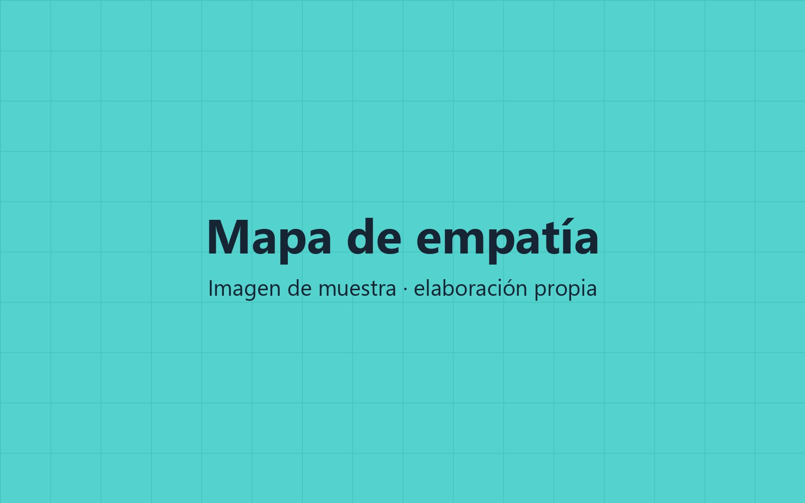
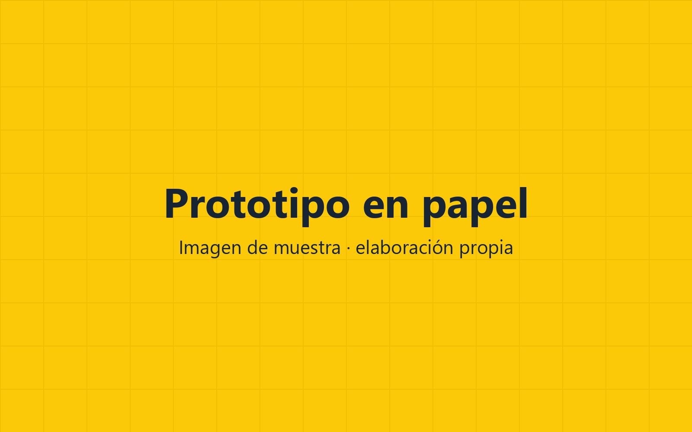
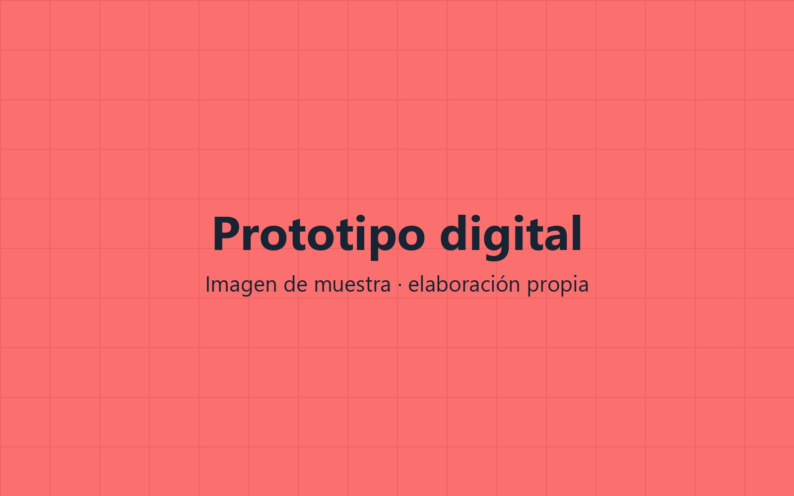
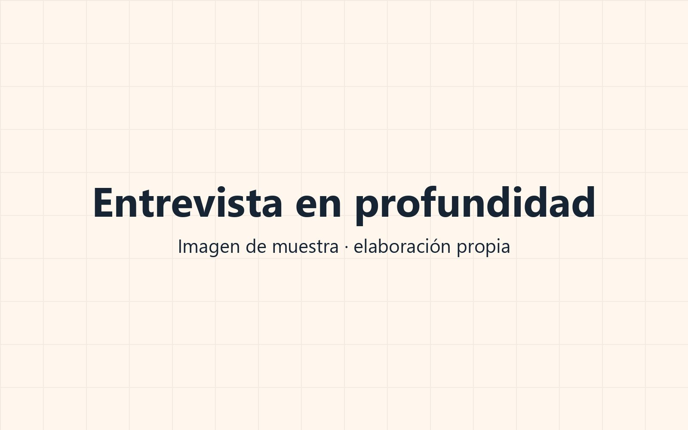
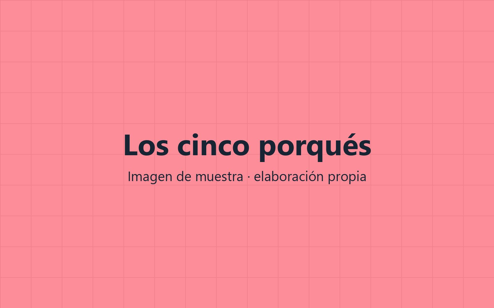

Unidad 3
Contenidos de la unidad
Seis sesiones: tres de práctica en equipo, dos de teoría y una de defensa. La teoría va justo antes de la práctica que la necesita.
- 01The Wallet Project: Design Thinking en una hora
- 02Técnicas de pensamiento creativo
- 03Las cinco fases del Design Thinking
- 04Lean Startup: crear, medir, aprender
- 05Business Model Canvas
- 06Plan de implementación y viabilidad sencilla
Resultado de aprendizaje 3
Qué vas a saber hacer
Usar Design Thinking, Lean Startup y Canvas para generar ideas
Con un reto real, en equipo y con entregables hechos en clase.
Detectar oportunidades de innovación en una empresa del sector
Entrevistar, observar y definir el problema antes de buscar la solución.
Planificar la propuesta y valorar si es viable
Un plan de implementación básico y una cuenta sencilla de ingresos y gastos.
3.1 Empatizar
Antes de la solución, el problema
La fase de empatía sirve para entender qué necesita la persona para la que diseñas, no qué te gustaría venderle. Se pregunta, se observa y se anota sin juzgar.
- —Entrevista en profundidad: preguntar por qué, no solo qué
- —Observación directa de cómo usa el producto o servicio
- —Mapa de empatía: qué piensa, oye, ve, dice y hace

Figura 3.1. Mapa de empatía de un equipo. Haz clic en la foto para verla en grande.
3.2 Design Thinking
Las cinco fases
Empatizar
Entrevistar y observar a las personas.
Definir
Escribir el problema como un reto concreto.
Idear
Muchas ideas, sin filtrar todavía.
Prototipar
Construir algo barato que se pueda tocar.
Testear
Probarlo con el usuario y anotar qué cambiar.
3.3 Idear
Técnicas de pensamiento creativo
Tabla 3.1. Resumen de las técnicas vistas en clase.
3.4 Lean Startup
Prototipo frente a producto mínimo viable
Prototipo
- ●Sirve para probar una idea con usuarios
- ●Puede ser de papel, cartón o piezas de Lego
- ●No se vende: se enseña y se tira
Producto mínimo viable
- ●Versión mínima que llega a clientes reales
- ●Funciona de verdad, aunque haga poco
- ●Se mide su uso y se decide si seguir o cambiar
3.2 Definir
La frase de punto de vista
Resume lo que has aprendido en la entrevista en una sola frase. La necesidad es un verbo, no una solución. El hallazgo es algo que te ha sorprendido.
3.2 Prototipar
Baja y alta fidelidad

Baja fidelidad. Papel, cartulina o Lego. Se hace en minutos y se cambia sin pena.

Alta fidelidad. Pantallas navegables hechas con una herramienta de diseño. Solo cuando la idea ya está probada.
3.1 Empatizar
Tres herramientas para conocer al usuario
Pulsa cada herramienta para ver su foto.
Entrevista en profundidad
Preguntas abiertas, silencios y muchos porqués. Se graba con permiso.
Los cinco porqués
Preguntar por qué cinco veces seguidas hasta llegar a la causa de fondo.
Mapa de empatía
Qué piensa, oye, ve, dice y hace, y qué le cuesta y qué quiere conseguir.


Vídeo 3.1. Sustituir por el enlace de inserción del vídeo (YouTube, Vimeo o archivo propio).
3.2 Vídeo
Un equipo prototipa en cinco minutos
Fíjate en cuántas veces cambian el prototipo después de enseñárselo al usuario. Al terminar lo comentamos.
- —Duración: 5 min
- —Ver hasta el minuto 3:40

Pregunta a la clase
¿Qué producto o servicio os ha cambiado la vida en los últimos cinco años?
Pensad en algo que ahora usáis a diario y que hace cinco años no existía o no usabais.
Ideas
- ●Pagar con el móvil: la cartera se queda en casa.
- ●Asistentes de IA: escribir, resumir y programar con ayuda.
- ●Entrega en el mismo día: comprar hoy y tenerlo hoy.
- ●Vídeo corto: la forma en que se descubre música, noticias y productos.
Pregunta a la clase
¿Cuánto se tarda en recorrer las cinco fases con The Wallet Project?
1 hora
Nueve pasos cronometrados, 56 minutos en total, más la puesta en común. Es lo primero que haremos en esta unidad.
9
Bloques del Business Model Canvas
Un lienzo de una página que describe cómo una empresa crea valor, a quién se lo entrega y cómo gana dinero con ello.
5
Fases del Design Thinking
3
Pasos del ciclo Lean: crear, medir, aprender
Design Thinking, parte 1: empatizar y definir
Con vuestro reto elegido, entrevistad a dos personas que lo vivan, rellenad el mapa de empatía y escribid el reto como una pregunta que empiece por «¿Cómo podríamos…?».
Duración
1 sesión (2 h)
Modalidad
Equipos de 3 o 4
Entrega
Mapa de empatía y reto definido
Material
Plantilla, notas adhesivas y rotuladores
- 1.Entrevistad a dos personas, 10 minutos cada una
- 2.Rellenad el mapa de empatía con lo que habéis oído
- 3.Escribid el reto y enseñádselo al profesor antes de idear

En esta práctica las ideas las genera el equipo
La inteligencia artificial no se usa en clase salvo que se indique expresamente. Si se pide, se dice en el enunciado y se entrega también el prompt.
Unidad 3
Resumen de la unidad
Design Thinking empieza por la persona: empatizar y definir antes de idear.
Un prototipo barato y probado vale más que una idea perfecta sin probar.
Lean Startup: crear un producto mínimo, medir su uso y aprender antes de invertir más.
El Business Model Canvas resume en una página cómo la idea crea valor y gana dinero.
Para ampliar
Recursos y bibliografía
- TallerThe Wallet Project, guía del facilitador y hoja del participante. d.school, Universidad de Stanford. CC BY-NC-SA.
- LienzoBusiness Model Canvas. Strategyzer AG. CC BY-SA 3.0.
- NormativaORDEN EDU/411/2025, de 15 de abril. Currículo del módulo CL32.